Supply chain and inventory
Harvest batches, shelf life, cooperative inventory and a read-only view that traces products from their source to the recipient.
SP3 Agriculture Cooperative · Payanas, Torrijos, Marinduque
SAGANA helps farmers record their harvests, buyers shop approved local produce, and cooperative staff manage inventory, loans, programs and reports – all from an Android phone.
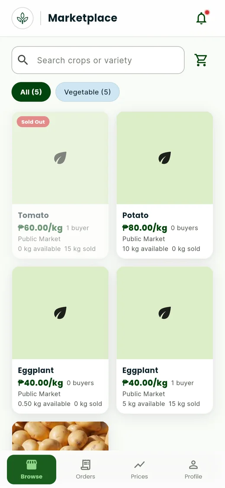
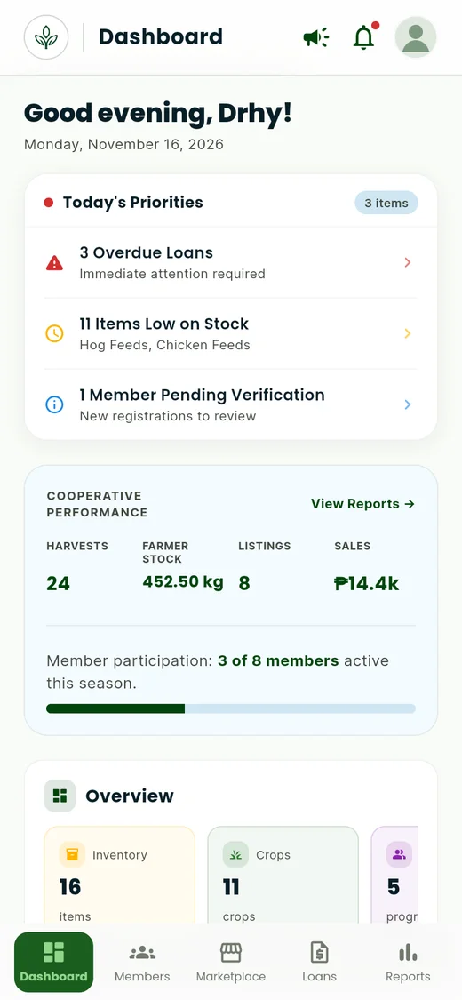
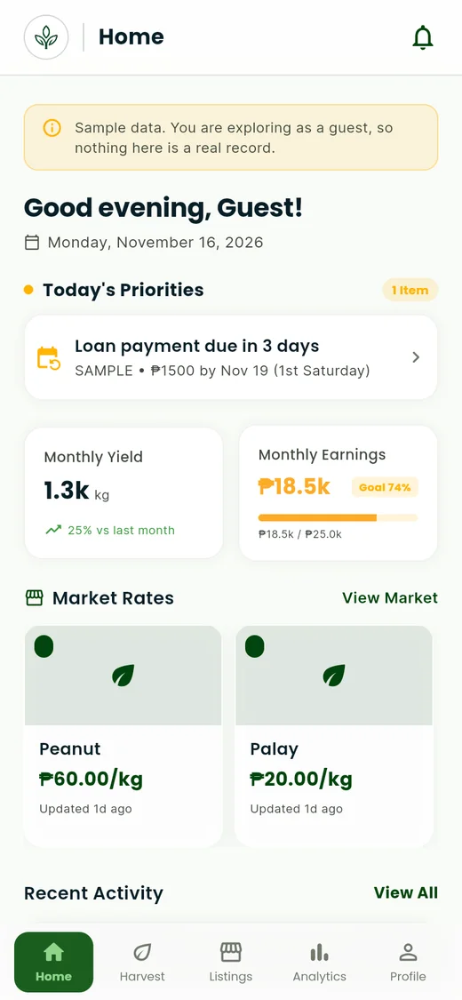
About SAGANA
SAGANA stands for Streamlined Agricultural Gateway for Agribusiness, Networking, and Analytics. It is a mobile system built for the SP3 Agriculture Cooperative of Barangay Payanas, Torrijos, Marinduque.
It replaces paper logbooks and scattered records. Farmers write down what they plant and harvest. The cooperative sees what stock is available and where products go. Buyers can order approved produce for pickup or delivery. Loans, programs and reports live in the same place, so everyone works from the same up-to-date records.
Harvest batches, shelf life, cooperative inventory and a read-only view that traces products from their source to the recipient.
Approved listings, a shopping cart, pickup or delivery orders, and order tracking from placed to completed.
Loans and payments, programs, Capital Share, reference prices and reports for the Manager and Officers.
System features
These are the modules in the current SAGANA app.
Keep a crop roster and farm details, record each harvest and track every batch in your inventory. Add expenses to see where your money goes.
Farmers list produce for cooperative review. Buyers browse approved listings, compare prices and add items to a cart. Farmers can also buy cooperative products.
Choose pickup or delivery at checkout and follow the order through each step. The customer confirms receipt, and payment is recorded in cash at handover.
Farmers can request input loans. Staff issue loans and record payments. A member's Capital Share builds from contributions and sets how much of each loan item they can borrow.
The cooperative runs programs such as seed distributions. Farmers join, receive items and report the outcome, and staff review the evidence.
See reference market prices and price history. Harvest analytics and a planting forecast estimate cooperative supply from recorded harvests.
Every harvest counts down from its harvest date using the crop's shelf life, and SAGANA reminds farmers to check produce before it is sold.
Harvests, expenses and some profile changes are saved on the phone and sent automatically when the connection returns. Orders and approvals need internet.
Staff read sales, harvest, stock and loan reports and export them. Supply Chain Management shows recorded product movements, read-only.
Who it's for
What you see in SAGANA depends on your account. You can also look around first with a sample-data preview.
Runs the cooperative's operations
Supports the Manager
Grows, records and sells
Shops local produce
Application preview
These are screenshots of SAGANA running with test data.
Priorities, monthly yield and earnings, sync status and market rates. Shown with guest sample data.
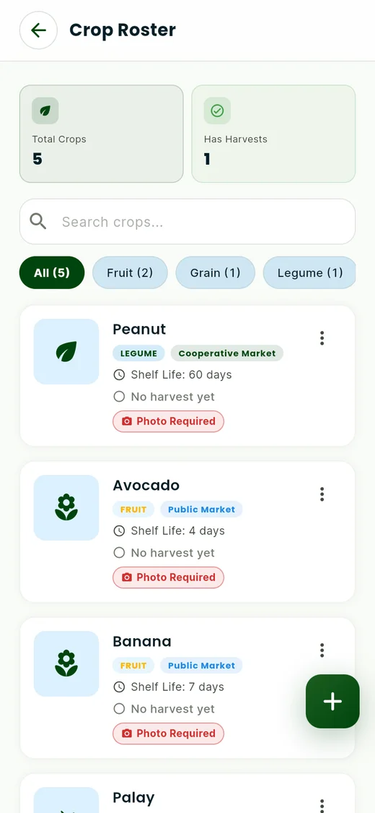
Your crops with their market type and shelf life. A photo of the crop is needed before it can be sold.
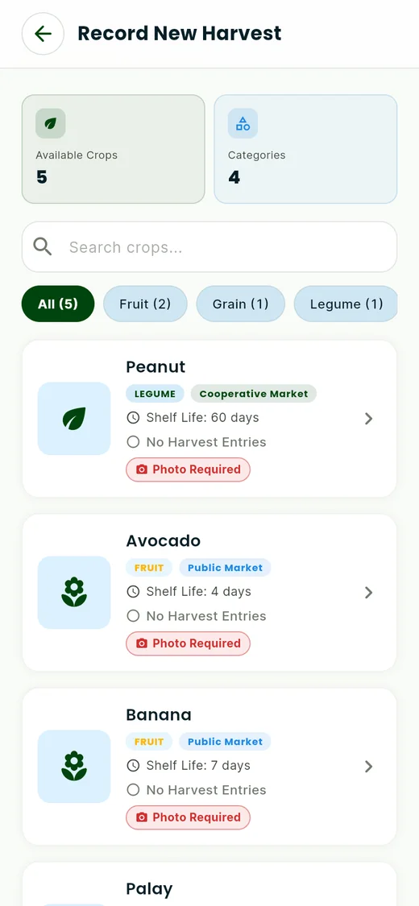
Choose a crop from your roster and enter what you harvested.
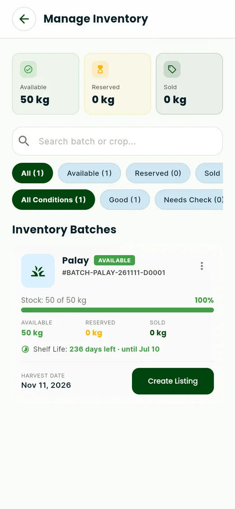
Each batch shows available, reserved and sold stock, and days of shelf life left.
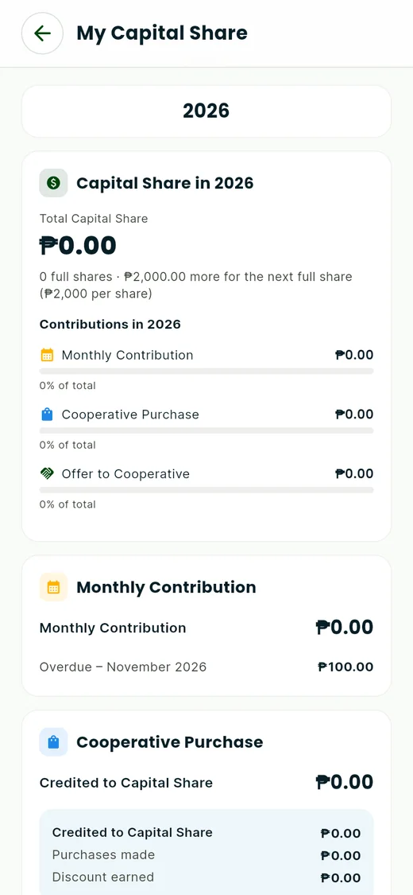
Contributions and credits for the year, from monthly payments, purchases and offers.
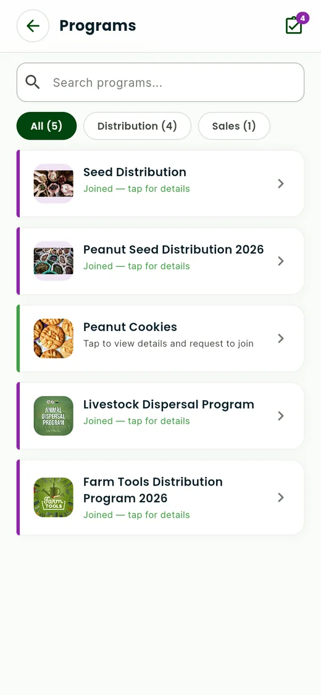
Cooperative programs you can join, such as seed distributions.
Search approved listings by crop and open your cart.
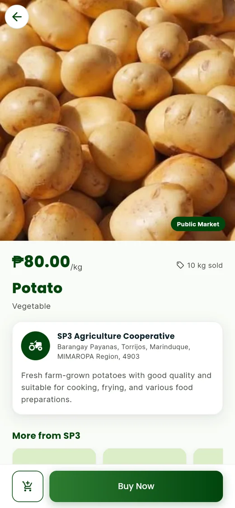
Price, available quantity and the selling cooperative, with Buy Now or add to cart.
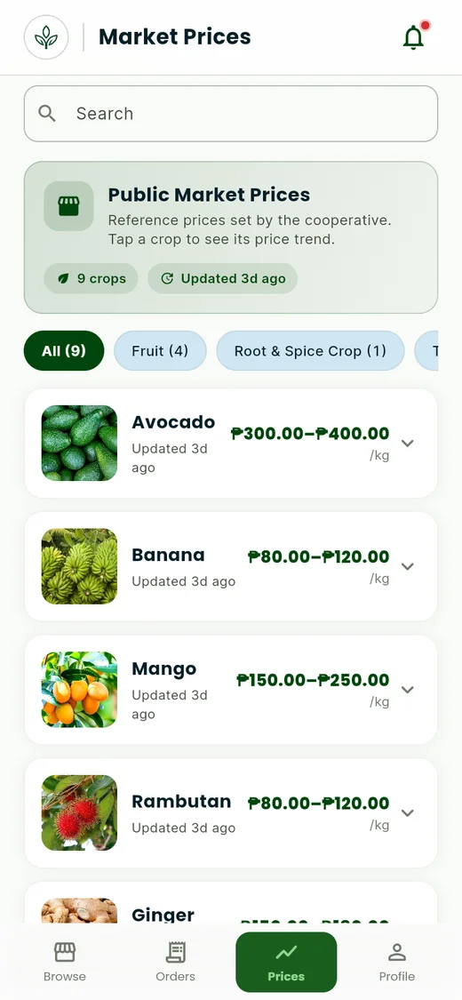
Reference prices set by the cooperative for each crop.
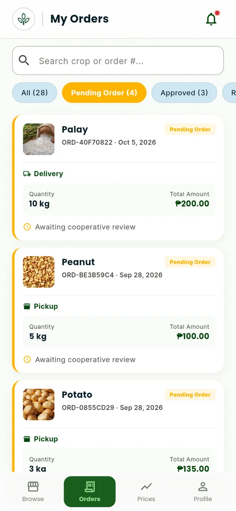
Filter orders by status and see pickup or delivery at a glance.
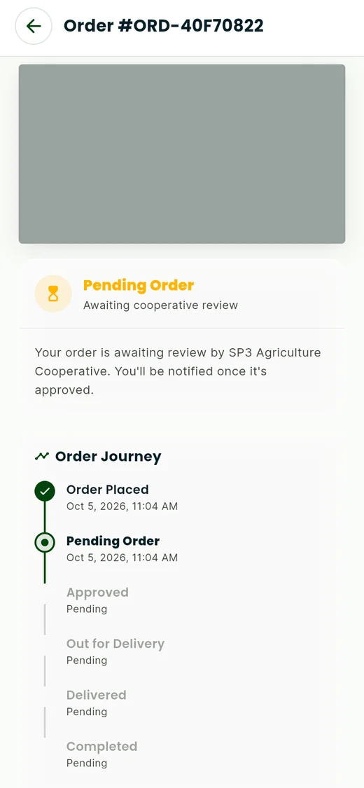
Follow an order from Order Placed through to Completed.
Today's priorities and cooperative performance at a glance.
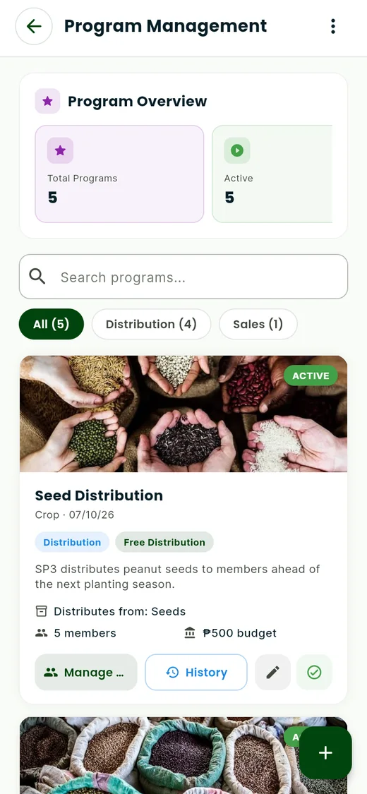
Create and run distribution and sales programs.
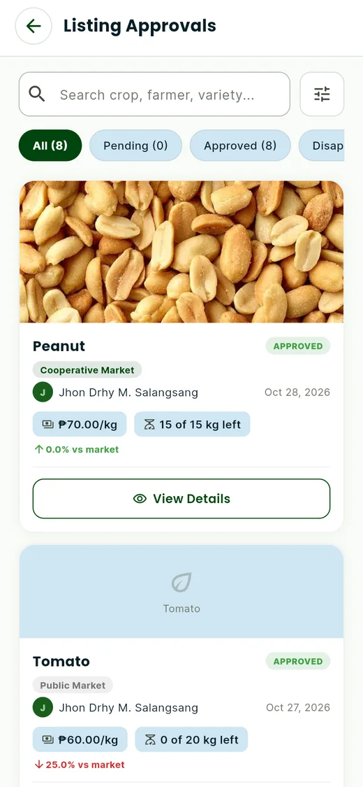
Review Farmer listings before they reach Buyers.
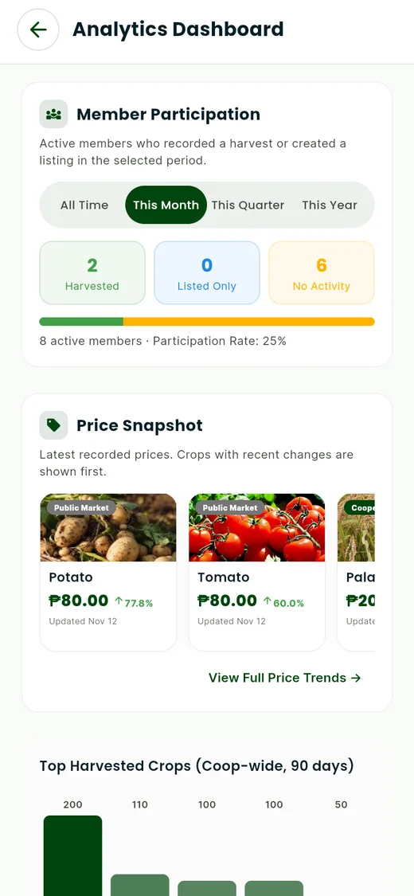
Member participation, price snapshots and top harvested crops.
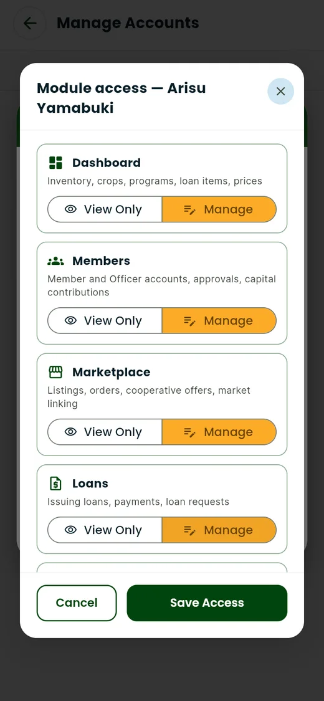
The Manager sets View Only or Manage for each staff area.
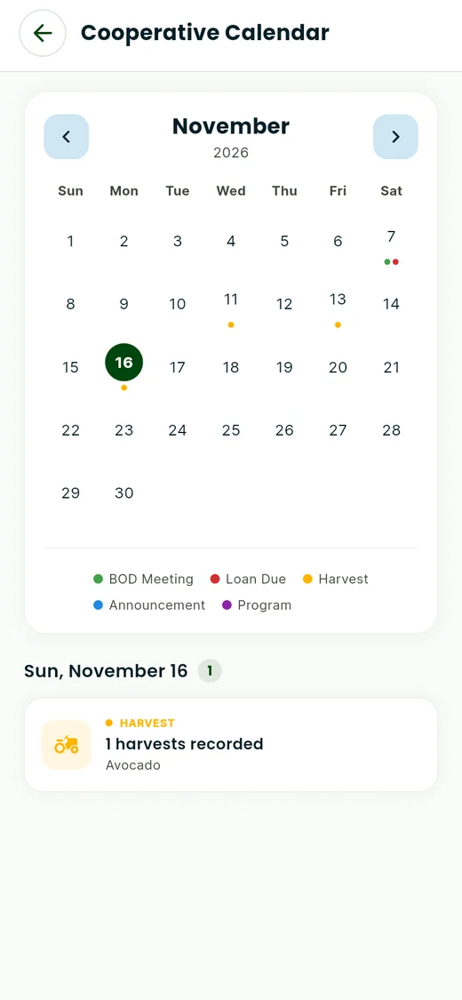
Meetings, loan due dates, harvests, announcements and programs.
How to use SAGANA
Scan the QR code in the Download section, or visit this website in Chrome.
Tap Download Now, then open the downloaded file. Follow the install steps if Android asks for permission.
Tap SAGANA on your phone. Allow camera, location or notifications when asked, if you want those features.
Pick Login, or look around first with Explore as Buyer or Explore as Farmer. The preview uses sample data and creates no real records.
On Login, tap Create an Account. Buyers enter their name, a username and a password, and can sign in right away. Farmers complete three steps (personal, address, review) and wait for the Manager's approval; the app shows your application status. Registration is for Barangay Payanas, Torrijos, Marinduque.
Officer accounts are created by the Manager. The Manager account is supplied by the cooperative. Sign in with the username and password you were given, then choose your own password when prompted.
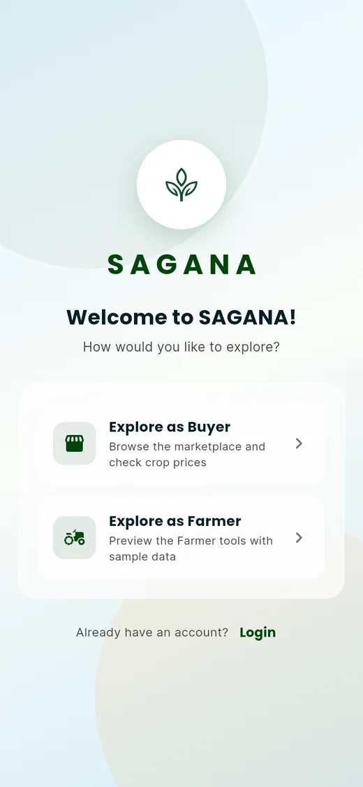
The welcome screen: log in, or explore first.
Download SAGANA
One direct download. Scan the QR code on your phone or tap the button.
Checking the latest version…
Point your phone camera at the code. It opens this page, so it always leads to the newest version.
Save the QR code (PNG)Open this page in Chrome on your Android phone and tap Download Now. (Some in-app browsers block file downloads.)
When it finishes, tap the downloaded file SAGANA.apk.
If Android says it cannot install from this source, open Settings from the prompt and allow your browser to install apps. The wording differs by phone. Then go back and tap the file again.
Tap Install. Android may warn that the app is not from Google Play, because SAGANA is shared directly. Continue only if you downloaded it from this page.
Tap Open, or find SAGANA in your apps.
Frequently asked questions
SAGANA is a mobile system for the SP3 Agriculture Cooperative of Barangay Payanas, Torrijos, Marinduque. It combines farm records, a digital marketplace, loans, programs, prices and reports.
Buyers and Farmers can create their own account. Officer accounts are created by the Manager, and the Manager account is supplied by the cooperative. Anyone can also try a read-only preview with sample data.
Choose Create an Account and select the Farmer tab. You complete three steps (personal information, address, review). The address area is fixed to Barangay Payanas, Torrijos, Marinduque. Your application then waits for the Manager's decision. If it is disapproved, you can fix the details and resubmit.
No. On the welcome screen, choose Explore as Buyer or Explore as Farmer. The preview shows sample data and cannot create real orders or records.
Android 7.0 (Nougat, API level 24) or later. Older versions are not supported. Maps and phone notifications also need Google Play services.
No. SAGANA is currently available for Android only.
No. It is shared as a direct download from this page. Always download it here, and not from links sent by others.
Android shows a warning for any app installed from outside Google Play. If you downloaded SAGANA from this page, you can continue. See How to install.
Partly. Farmer harvests and expenses, some profile changes, staff loan payments and capital contributions can be saved on the phone and sent automatically when the connection returns. Buyer actions, orders, listings, approvals and loan requests need internet. Sign in and load your records while connected first.
SAGANA records cash payment when an order is handed over. The customer then confirms receipt in the app.
Yes. The app is available in English and Filipino, and in light or dark mode.
About the team
SAGANA was developed as a capstone project for the SP3 Agriculture Cooperative.
Lead Developer
Leads the technical build: the Flutter mobile app, the Supabase database and its security rules, offline sync and the overall architecture.
UI/UX Designer
Designs how SAGANA looks and feels: screens, navigation and visual style, in simple bilingual layouts for members with different levels of digital experience.
System Analyst
Gathers and documents what the cooperative needs: workflows, business rules and the requirements the system is built against.
QA Tester
Checks that SAGANA works as specified: tests features for each role, verifies business rules, reports defects and confirms fixes.